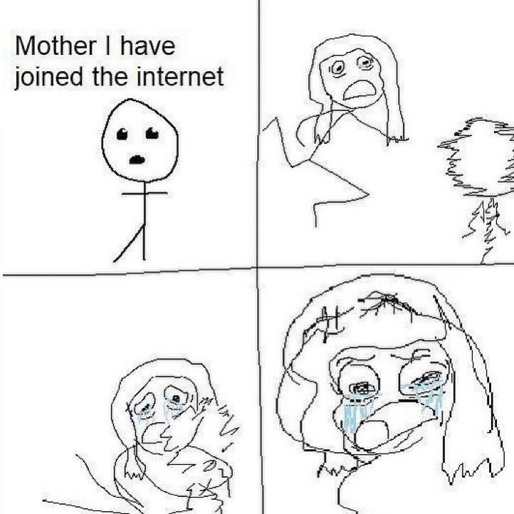

The Wired
The Wired is the 3D web. It is the 3D representation of hypermedia.
Hypermedia Functor (F: 2D -> 3D)
| F | 2D | 3D |
|---|---|---|
| Category | Web | Wired |
| Object | Website (HTML + JS) | World (glTF + WASM) |
| Morphism | Hyperlink (directed) | Portal (retractable) |
Space
An important distinction here is the difference between a 2D page and a 3D space, from the perspective of a human.
A 2D page (a piece of paper) cannot meaningfully be inhabited by a 3D being (a human). The best you can do is projection — reducing the entity's dimensionality to a 2D icon (mouse cursor, profile picture) or even a 1D point (tip of a pencil).
This has obvious flaws if your goal is self-expression (or any downstream goal from this, such as communication). Put in other words, The Web offers symbolic reality, whereas The Wired offers embodied reality.
Multi-tenancy
Any embodied space, by its nature[1][2], admits the possibility of multiple tenants. This is a structural property of navigable environments. Because of this, The Wired represents hypermedia as an inherently shared space — a multiplayer environment — as opposed to the isolated pages of The Web.
Humanism
All of this combines to make The Wired a much more "human" interface for information.
I like to think this will help push back against the growing negatives of our reliance on technology — creating a medium where people speak with their voice, arm movements, and facial expressions — not text; where people see with their eyes and interact with their hands — not a manufactured image or uninteractive video; where people dance with their bodies — not a purchased emote or reaction GIF.
That said, a stronger embodiment (or entrapment) of the soul within metal may only serve to make things worse.
References
- Heidegger's notion of Dasein describes human existence as fundamentally situated in space, inherently capable of shared presence and interaction (Being and Time).
- In topology, a space is defined by its openness and connectedness, implying it can be occupied by multiple distinct points simultaneously.